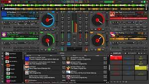
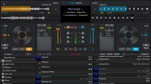
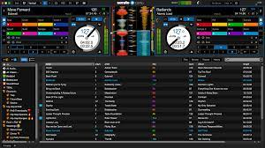
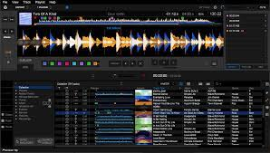
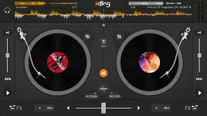
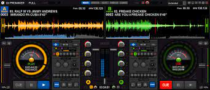

---SOFTWARES---

1.VirtualDJ. BUILD 6732. 3.9. (67307 votes) ...

2.DJ Mixer Express. 5.8.3. 3.3. (3687 votes) ...

3.Serato DJ. 2.4.1. (1604 votes) ...

4.Rekordbox. 4.3.1. 4.5. ...

5.edjing for Windows 10. 2.1.0. 3.6. ...

6.DJ ProMixer Free Home Edition. 2.0-free-home-edition. 3.9. ...